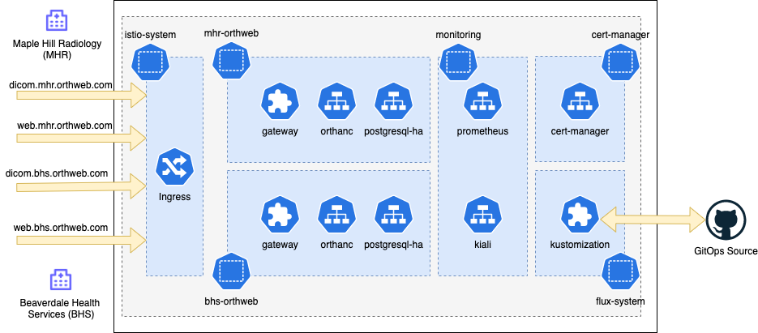

GitOps approach with FluxCD
GitOps is the recommended approach and we use FluxCD. This approach deploys two Orthanc tenants, respectively for bhs and mhr (Beaverdale Health Services and Maple Hill Radiology).
Architecture
At the end of deployment two instances are deployed, in the bhs-orthweb and mhr-orthweb namespaces, as illustrated below:

Each tenant has its own namespace, where the application, routing and database are hosted. Other services such as cert-manager are shared. Since there are multiple tenants, please ensure that the kubernetes cluster has sufficient capacity.
Preparation
Ensure that you can connect to your K8s cluster with kubectl from your command terminal. Your user in K8s needs sufficient privilege for Flux to perform deployment activities.
Fork this repo to your own GitHub account to serve as the source of deployment. Then obtain your Personal Access Token. Ensure this (classic) token carrier has read-write access to your fork repo.
On the command terminal, assign the value of token to environment variable GITHUB_TOKEN:
export GITHUB_TOKEN=ghp_yyy55555XXXodr7ABBBB234CCccw
In the next step, flux will consume this environment variable.
Deployment
First, we bootstrap the cluster with flux. Suppose the name of your account is digihunch, and the repository name is korthweb, the command to run would be:
flux bootstrap github \
--owner=digihunch \
--repository=korthweb \
--branch=main \
--personal \
--path=gitops/fluxcd
A deployment key will be created. FluxCD will be installed on the cluster, and scans the path specified (gitops/fluxcd) for Kustomization objects. Kustomization objects defines the sources to sync from. The sync should start automatically (using Kustomization objects) as boostrapping is completed. To check sync progress by kusomization status, run:
flux get ks --watch
It may take 10 minutes to sync all layers. At the end, the output should look like this:
NAME READY MESSAGE REVISION SUSPENDED
bhs-application True Applied revision: main/feffc67 main/feffc67 False
bhs-dependency True Applied revision: main/feffc67 main/feffc67 False
flux-system True Applied revision: main/feffc67 main/feffc67 False
infrastructure True Applied revision: main/feffc67 main/feffc67 False
observability True Applied revision: main/feffc67 main/feffc67 False
mhr-application True Applied revision: main/feffc67 main/feffc67 False
mhr-dependency True Applied revision: main/feffc67 main/feffc67 False
When all Kustomizations show True for READY, deployment is completed.
Troubleshooting
It is important to ensure that the cluster has sufficient capacity, especially if you are running on a single node test cluster. Some stacks will time out when the node does not have sufficient capacity. In case of deployment errors, below are some steps I took to troubleshoot.
- Examine status of each Kustomization. The following command is essentially the same as "fluxctl get ks":
kubectl -n flux-system get kustomization
The result may look like this where two kustomizations are waiting for health check results:
NAME READY STATUS AGE
bhs-application False dependency 'flux-system/bhs-dependency' is not ready 8m14s
bhs-dependency Unknown running health checks with a timeout of 9m30s 8m14s
flux-system True Applied revision: main/283db0a641d41637cfc9b6f0f13947d5849e4290 8m47s
infrastructure True Applied revision: main/283db0a641d41637cfc9b6f0f13947d5849e4290 8m14s
mhr-application False dependency 'flux-system/mhr-dependency' is not ready 8m14s
mhr-dependency Unknown running health checks with a timeout of 9m30s 8m14s
This state is normal for a short period of time but if it seems to take forever, we need to inspect the kustomizations pending for health check success.
- Review the specific kustomization in question by describing the Kustomization:
kubectl -n flux-system describe kustomization mhr-dependency | less
The output may include a section like below as Condition:
Conditions:
Last Transition Time: 2022-02-04T01:36:26Z
Message: Health check failed after 9m30.012342358s, timeout waiting for: [HelmRelease/mhr-orthweb/postgres-ha status: 'InProgress': context deadline exceeded, Deployment/mhr-orthweb/postgres-ha-postgresql-ha-pgpool status: 'NotFound': context deadline exceeded]
Reason: HealthCheckFailed
Status: False
Type: Ready
Last Transition Time: 2022-02-04T01:36:26Z
Message: HealthCheckFailed
Reason: HealthCheckFailed
Status: False
Type: Healthy
The result suggests that Health check for a HelmRelease postgres-ha failed.
- Review the status of the specific HelmRelease releated to the failure:
kubectl -n bhs-orthweb describe helmreleases postgres-ha | less
The result may show the following in Events:
Events:
Type Reason Age From Message
---- ------ ---- ---- -------
Normal info 12m helm-controller HelmChart 'flux-system/bhs-orthweb-postgres-ha' is not ready
Normal info 11m helm-controller Helm install has started
Normal error 11m helm-controller Helm install failed: YAML parse error on postgresql-ha/templates/postgresql/statefulset.yaml: error converting YAML to JSON: yaml: line 32: could not find expected ':'
```
The error provides the detail of the reason for failure in the Helm Deployment.
4. You can also check the log of Flux:
```sh
flux logs